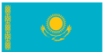

Kazakhstan: Facts and Geography
Kazakhstan is a large country of varied terrain in Central Asia.

Here are 5 interesting facts about Kazakhstan:
- Kazakhstan has the longest continual border in the world.
- Kazakhstan is the largest landlocked country in the world
- Kazakhstan is quite ethnically diverse.
- The word "Kazakh" translates to "wanderer" or "independent."
- Kazakhstan contains one of the largest lakes in the world, "Lake Balkhash."